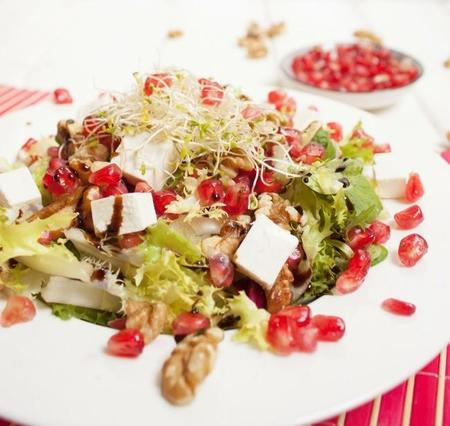

Recetas de ensaladas ligeras
Ensaladas Ligeras y Fáciles: 31 recetas originales y light - Directo al Paladar

Webedia Directo al Paladar Menú Nuevo Buscar Pinterest Facebook Flipboard Instagram Youtube POSTRES MENÚ SEMANAL SELECCIÓN Partners
Triunfa Con Buitoni Cocina con Maggi Destaca con PascualEnsaladas ligeras
HOY SE HABLA DE Menú Patatas Frutos secos Mascarillas España AndalucíaEnsalada cantonal o de ahumados, receta tradicional de Cartagena que conmemora la Rebelión cantonal
Recetas de Ensaladas Liliana Fuchs 16 junio 2021, 12:01Receta de ensalada con aguacate, edamame, pepino y salsa cremosa: la más verde de las ensaladas
Recetas de Ensaladas Liliana Fuchs 09 junio 2021, 12:01Ensalada de piña, pepino y cacahuetes: receta rápida, ligera, saludable y deliciosa
Recetas de Ensaladas Liliana Fuchs 26 abril 2021, 12:01Salsa César: receta clásica de un aliño ideal, más allá de las ensaladas
Recetas de Salsas y guarniciones Miguel Ayuso 25 marzo 2021, 18:01LO MÁS POPULAR
1 Ajo caliente, campero o de viña: la humilde receta tradicional andaluza que nos tiene cautivados 2 Cómo hacer los mejores boquerones fritos en casa 3 Calamares rellenos a la marinera: receta tradicional para chuparse los dedos 4 Las sartenes mejor valoradas de Amazon en oferta con las que adelantarte al Prime Day 5 Por qué el bizcocho en Italia se llama “pan de España” y en Japón “pan de Castilla”Lo más popular en Directo al Paladar
Ensalada de apio y perejil con frutos secos: receta vegana ligera, saludable y refrescante
Recetas de Ensaladas Liliana Fuchs 02 marzo 2021, 12:01Ensalada tartar de aguacate y pomelo: receta en vasito para un aperitivo navideño ligero y refrescante
Recetas de Aperitivos Liliana Fuchs 12 diciembre 2020, 13:01Receta de ensalada de garbanzos y tallo de brócoli con cilantro y limón, ideal para comer solos (o multiplicar las raciones)
Recetas de Legumbres y verduras Liliana Fuchs 18 agosto 2020, 16:03Ensalada de lentejas rojas con sardinillas: receta para comer bien y saludable en menos de 30 minutos
Recetas de Legumbres y verduras Liliana Fuchs 02 julio 2020, 12:01Directo al Paladar TV
Síguenos enReceta de empanadas criollas caseras, fáciles y rápidas
SANGRÍA como DIOS MANDA
Cómo sacar TODO EL PARTIDO a una FREIDORA SIN ACEITE
Síguenos Twitter Facebook Youtube Instagram Pinterest FlipboardEnsalada de arroz con salmón y verduras: receta fácil y saludable para días calurosos
Recetas de Ensaladas Liliana Fuchs 26 mayo 2020, 12:01Ensalada de lentejas crujientes al horno: receta vegana saludable para reengancharse a esta legumbre
Recetas Vegetarianas Liliana Fuchs 16 abril 2020, 12:00Ensalada de remolacha, queso de cabra y arándanos: la ensalada morada que te sorprenderá
Recetas de Ensaladas Esther Clemente 30 junio 2019, 20:01Siete ensaladas originales y saciantes y siete preciosas ensaladeras para presentarlas de manera elegante
Utensilios Pakus 28 abril 2019, 11:01Ensalada de maíz fresco salteado y pollo: receta saludable
Recetas de Ensaladas Liliana Fuchs 19 septiembre 2018, 13:27Ensalada cremosa de pepino: receta ligera y refrescante
Recetas de Ensaladas Liliana Fuchs 01 julio 2020, 10:08101 recetas ligeras para adelgazar
Recetario de cocina Liliana Fuchs 21 diciembre 2018, 08:00Las ensaladas más ligeras: 27 recetas para cuidarte este verano
Recetas de Ensaladas Liliana Fuchs 04 agosto 2020, 11:10Qué es y cómo se hace una ensalada compuesta
Recetas de Ensaladas Liliana Fuchs 16 abril 2018, 16:11Ensalada de patata y langostinos con vinagreta de lima. Receta para un día de calor
Recetas de Ensaladas Liliana Fuchs 12 junio 2017, 10:54Ensalada de tallarines zanahoria con queso de cabra, nueces y aliño de azahar. Receta ligera
Recetas de Ensaladas Liliana Fuchs 20 agosto 2017, 19:13Ensaladas perfectas: los mejores utensilios para triunfar con ellas
Utensilios Liliana Fuchs 08 junio 2017, 17:32 Más antiguasArchivo de noticias
Noticias de Ensaladas ligeras en Directo al Paladar
Las mejores recetas de ensaladas ligeras y fáciles para adelgazar y perder peso sin pasar hambre. Ideas de ensaladas light para cenar y comer. Añade a tu dieta estas ensaladas saludables
OTROS TEMAS: Recetas con Thermomix Recetas de Aperitivos Postres fáciles y rápidos Recetas de invierno Horno InicioPartners
Triunfa Con Buitoni Cocina con Maggi Destaca con Pascual Recetas con Thermomix Recetas de Aperitivos Recetas de Ensaladas Recetas de Postres Recetas Vegetarianas Utensilios Postres fáciles y rápidos Recetas de invierno Horno Huevos Azúcar HarinaVer más temas
Síguenos Twitter Facebook Youtube Instagram Pinterest Flipboard Directo al Paladar TV Lo mejor Equipo editorial Contacta con nosotrosMás sitios que te gustarán
Espinof Xataka Poprosa VitónicaExplora en nuestros medios
Tecnología Móviles, tablets, aplicaciones, videojuegos, fotografía, domótica Xataka Xataka Móvil Xataka Foto Xataka Android Xataka Smart Home Xataka Windows Xataka Ciencia Applesfera Genbeta Magnet Mundo Xiaomi Videojuegos Consolas, juegos, PC, PS4, Switch, Nintendo 3DS y Xbox 3DJuegos Vida Extra IGN Millenium Entretenimiento Series, cine, estrenos en cartelera, premios, rodajes, nuevas películas, televisión Sensacine Espinof Gastronomía Recetas, recetas de cocina fácil, pinchos, tapas, postres Directo al Paladar Estilo de vida Moda, belleza, estilo, salud, fitness, familia, gastronomía, decoración, famosos Vitónica Trendencias Trendencias Hombre Decoesfera Compradiccion Poprosa Latinoamérica Publicaciones de México Xataka México Directo al Paladar México Sensacine México 3DJuegos México Aviso legal Condiciones de uso Condiciones de uso de cookies Publicidad InicioReciente
Redondo frío de pollo, receta perfecta para un picnic Nuestros favoritos Suspiros de Pajares, receta tradicional asturiana para nostálgicos de las galletas de mantequilla de toda la vida Ocho recetas de fritura de pescado para un picoteo del finde marinero Gastroguía de Sevilla: qué comer en la capital de Andalucía (y qué restaurantes no debes perderte en la ciudad hispalense) Cómo hacer mantequilla a las finas hierbas Nuestros favoritos Gratén o gratinado de patatas con cebolla caramelizada y queso, la receta que los más queseros adorarán Las sartenes mejor valoradas de Amazon en oferta con las que adelantarte al Prime Day Ensalada fusilli con mozzarella y atún, receta de pasta de verano Nuestros favoritos Cómo hacer los mejores boquerones fritos en casa Recetas variadas para disfrutar del verano en el menú semanal del 21 de junio Francia retira 7.000 productos por presencia de óxido de etileno: qué es esta sustancia cancerígena prohibida y cómo llega a los alimentos Narezushi: el antecedente directo del sushi es un pescado fermentado no apto para melindrosos Las mejores freidoras de aire caliente para cocinar sin aceite y llevar una alimentación equilibrada desde 60 euros en Amazon Recetas frescas de verano perfectas para la cena en el paseo por la gastronomía de la red Cómo hacer mantequilla clarificada o manteca de vaca cocida: receta ideal para la repostería tradicional Del gazpacho de Belén Esteban a las patatas fritas de Nil Ojeda y Paula Gonu: las nuevas marcas personales de comida en España Ajo caliente, campero o de viña: la humilde receta tradicional andaluza que nos tiene cautivados Por qué los gallegos nunca beben agua cuando comen pulpo Tapas: 57 ideas fáciles para comer de picoteo Nuestros favoritos Probamos la Aifryer XL de Philips, una freidora sin aceite extragrande (y con WiFi)Ver más artículos
Directo al Paladar TV
Receta de empanadas criollas caseras, fáciles y rápidas SANGRÍA como DIOS MANDA Cómo sacar TODO EL PARTIDO a una FREIDORA SIN ACEITEVer más vídeos
Síguenos Twitter Facebook Youtube Instagram Pinterest FlipboardEn Directo al Paladar hablamos de
Recetas con Thermomix Recetas de Aperitivos Recetas de Ensaladas Recetas de Postres Recetas Vegetarianas Utensilios Postres fáciles y rápidos Recetas de invierno Horno Huevos Azúcar HarinaVer más temas
SubirWebedia
Tecnología
Xataka Xataka Móvil Xataka Foto Xataka Android Xataka Smart Home Xataka Windows Xataka Ciencia Applesfera Genbeta Magnet Mundo XiaomiVideojuegos
3DJuegos Vida Extra IGN MilleniumEntretenimiento
Sensacine EspinofGastronomía
Directo al PaladarEstilo de vida
Vitónica Trendencias Trendencias Hombre Decoesfera Compradiccion PoprosaLatinoamérica
Xataka México 3DJuegos México Sensacine México Directo al Paladar México Webedia Xataka Vida Extra Espinof Genbeta Directo al Paladar Xataka Ciencia Trendencias Applesfera Xataka Móvil Decoesfera Vitónica Xataka Foto Trendencias Hombre Xataka Android Xataka Smart Home Xataka Windows Magnet Compradiccion 3DJuegos Sensacine IGN Millenium Poprosa Mundo XiaomiTecnología
Xataka Xataka Móvil Xataka Foto Xataka Android Xataka Smart Home Xataka Windows Xataka Ciencia Applesfera Genbeta Magnet Mundo XiaomiVideojuegos
3DJuegos Vida Extra IGN MilleniumEntretenimiento
Sensacine EspinofGastronomía
Directo al PaladarEstilo de vida
Vitónica Trendencias Trendencias Hombre Decoesfera Compradiccion PoprosaPosted by Jack  Read more
Read more  Comments (15)
Comments (15)  2021.06.19 15:53
2021.06.19 15:53